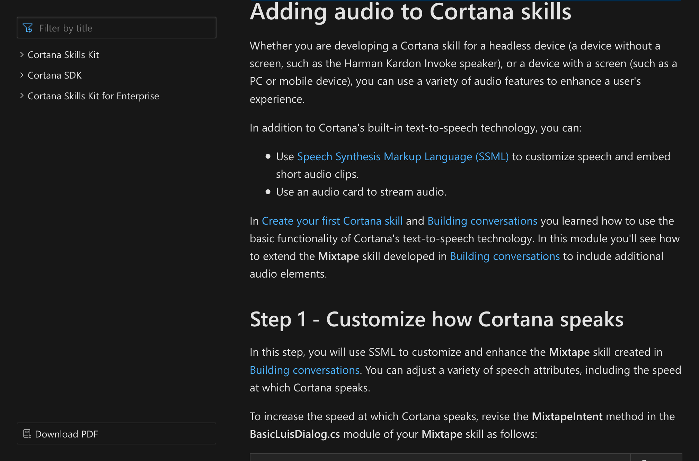

      <section>
        <h2 hidden aria-hidden="false">SSML Cortana</h2>
        <audio src="audio.oga"></audio>
        <figure>
          <a href="https://docs.microsoft.com/en-us/cortana/skills/speech-synthesis-markup-language">
          
          </a>

          <figcaption>
            <p>
           You guessed it! Cortana uses SSML to give you a more human-like experience.  
            </p>

          </figcaption>
        </figure>
      </section>
